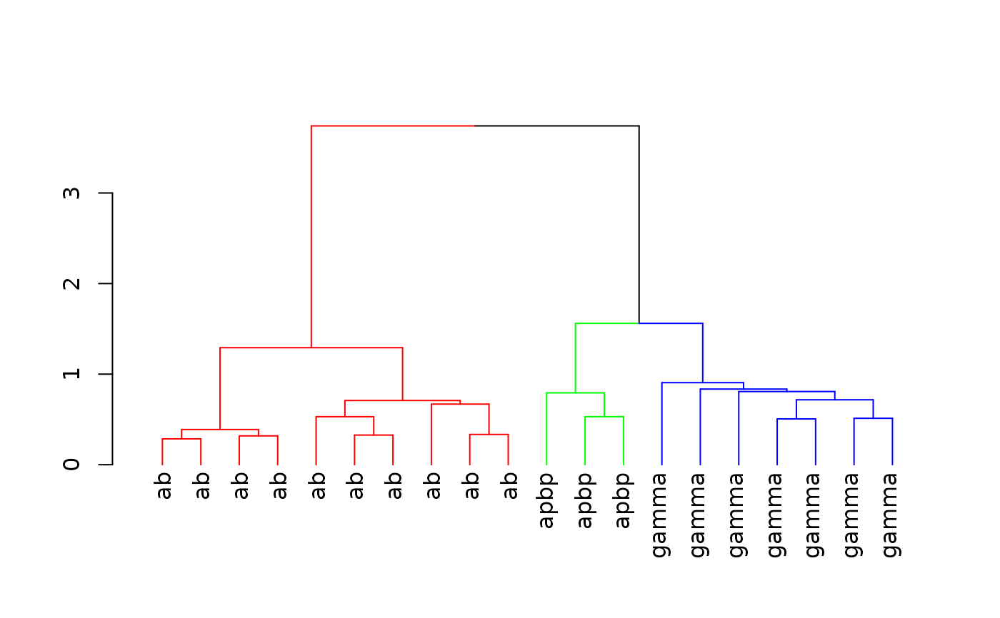

Given an NBLAST all by all score matrix (which may be specified by a package
default) and/or a vector of neuron identifiers use hclust to
carry out a hierarchical clustering. The default value of the distfun
argument will handle square distance matrices and R dist objects.
Usage
nhclust(
neuron_names,
method = "ward",
scoremat = NULL,
distfun = as.dist,
...,
maxneurons = 4000
)Arguments
- neuron_names
character vector of neuron identifiers.
- method
clustering method (default Ward's).
- scoremat
score matrix to use (see
sub_score_matfor details of default).- distfun
function to convert distance matrix returned by
sub_dist_matinto Rdistobject (default=as.dist).- ...
additional parameters passed to
hclust.- maxneurons
set this to a sensible value to avoid loading huge (order N^2) distances directly into memory.
Value
An object of class hclust which describes the tree
produced by the clustering process.
See also
Other scoremats:
sub_dist_mat()
Examples
library(nat)
kcscores=nblast_allbyall(kcs20)
hckcs=nhclust(scoremat=kcscores)
#> The "ward" method has been renamed to "ward.D"; note new "ward.D2"
# divide hclust object into 3 groups
library(dendroextras)
dkcs=colour_clusters(hckcs, k=3)
# change dendrogram labels to neuron type, extracting this information
# from type column in the metadata data.frame attached to kcs20 neuronlist
labels(dkcs)=with(kcs20[labels(dkcs)], type)
plot(dkcs)

# 3d plot of neurons in those clusters (with matching colours)
open3d()
plot3d(hckcs, k=3, db=kcs20)
# names of neurons in 3 groups
subset(hckcs, k=3)
#> [1] "FruMARCM-F000706_seg001" "FruMARCM-M000842_seg002"
#> [3] "GadMARCM-F000050_seg001" "FruMARCM-M001339_seg001"
#> [5] "FruMARCM-F001115_seg002" "FruMARCM-M001051_seg002"
#> [7] "FruMARCM-F001494_seg002" "FruMARCM-F000188_seg001"
#> [9] "FruMARCM-F000270_seg001" "FruMARCM-F001929_seg001"
#> [11] "GadMARCM-F000423_seg001" "GadMARCM-F000142_seg002"
#> [13] "ChaMARCM-F000586_seg002" "FruMARCM-M001205_seg002"
#> [15] "GadMARCM-F000122_seg001" "GadMARCM-F000476_seg001"
#> [17] "FruMARCM-F000085_seg001" "GadMARCM-F000071_seg001"
#> [19] "FruMARCM-M000115_seg001" "GadMARCM-F000442_seg002"